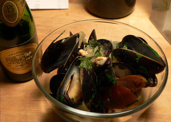

Moules marinières
This has been a weekend of inexpensive and simple cooking. Ever since n8 made me mussels for my birthday, I have been wanting to have them again. Moules marinières seemed like the easiest recipe in the world, so I gave that a try with moderate success.

All you do is simmer some onion, shallot, and garlic in a couple cups of white wine in a large pot for five or ten minutes, then throw in the rinsed mussels in their shells (figure one pound per person), cover the pot, and cook it over high heat for five minutes, shaking frequently. Add a few tablespoons of butter, chopped parsley, salt, and pepper, and you’re good to go. I wish I had added more salt earlier, and I longed for a big hunk of good bread, but it was a satisfying meal nonetheless. And when mussels are only $2.50 per pound, it’s cheaper than pizza and ten times more special. Especially with champagne!
Comments
About the mussels; is rinsing really enough? I haven’t dealt with mussels since my catering days, but I remember having to scrub them and pull their beards off!
I agree that brioche makes heavenly french toast; in Julia Child’s baking book, I forget the title—Baking with Julia or something—one of her guest chefs contributes a wonderfully decadent recipe for sticky buns made with brioche dough.
What an elegant dinner, the pork roast with yams and watercress, and so colorful! A little homemade applesauce on the side would have been good; a really tart one made from all McIntosh apples, unsweetened.
Mommy
When I made the birthday mussels I scrubbed and de-bearded them. Good thing I did too, since we slurped the mussel-breadcrumb mixture directly from the shells.
In Leland’s dish I didn’t notice any undesired artifacts with the shells, but wasn’t really looking either. I mean, I’d rather have bearded mussels than no mussels at all.
Hmm, mussel beard sounds very unappetizing. Ruth Reichl told me that mussels these days are much cleaner than they used to be, and that a good rinse is really all they need. Either way, I rinsed these guys for five minutes or less, and I didn’t notice anything wrong.
Spectacular! The simplest food is always the best!
Did you peel the roasted sweet potatoes? Did you roll them in a bit of olive oil?
Yes, I peeled them, and I tossed them olive oil, salt, and pepper!
I love those roasted yams also. I just started making them about 4 months ago. I put them in my broiler pan with olive oil, sea salt & pepper. They cook so fast and they’re so yummy we have them a couple times a week!
Did you ever try making Cuban sandwiches with your leftover roast pork? We can’t get them here in Pittsburgh and I’m obsessed with them; they sound so delicious.
Mom
Mmm, I love Cuban sandwiches. We’ll get them here next time you visit. I haven’t tried that yet but maybe I will.
Add a comment